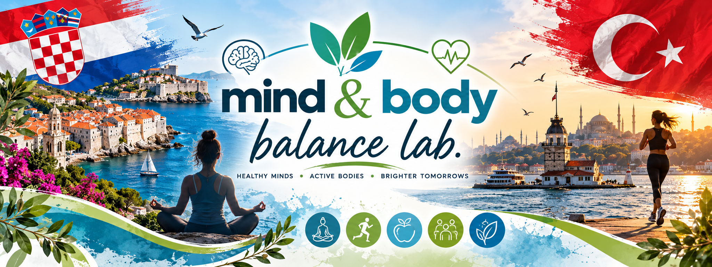

International Collaboration
Mind & Body Balance Lab
Exploring the relationship between mental health, emotional wellbeing, and healthy lifestyle habits among adolescents through research, digital tools, and creative production.
Project Timeline
October – May
8 Months of Active Wellbeing
Authors & Team
Co-authored by Matea Mihaljević (Founder) and Mediha Tabak (Co-founder, Haydarpaşa High School).
Student Wellbeing Toolkit
The final tangible outcome containing evidence-informed, student-friendly micro-interventions.
Safe & Voluntary
All activities respect personal boundaries, avoiding diagnosis disclosures or private health data.